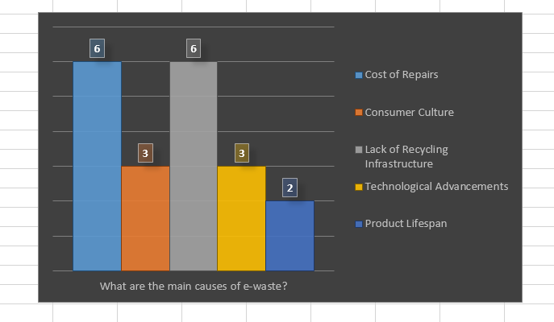

What method can we use to influence people to disposing of their e-waste efficiently?
What is E-Waste
E-waste comprises discarded electronic devices, posing environmental hazards due to toxic materials. Improper disposal harms ecosystems and human health. Recycling electronics is vital to mitigate pollution and conserve resources.
What are the main causes of e-waste to our environment
Cost of Repairs The cost to repair electronic devices gets more and more expesive by the year thus people always choose to buy new electronic devices each time an old one gets damaged.
Product Lifespan Product lifespan are increasingly getting slower. electronic device companys are finding ways to decrease the devices they sell to increase sales by people desposing of old devices for new ones.
Lack of Recycling Infrastructure Commuities in the rural areas and some cities do not have the sufficent infrastructure to dispose of the e-waste effectivly.
Consumer Culture Consumers always want the latest devices some even go to the extent of buying new devices each year and either throwing out the old ones or leaving them somewhere in the house where they throw them ouy after a few years.
Technological Advancements Technology is improving everyday. with this rapid change in technology and the changes we seeing everyday consumers buy the latest products with the latest technological advancements and throw out old items to the trash.

What solutions has government come up with to tackle the problem of e-waste
Governments have implemented policies for e-waste management, including extended producer responsibility (EPR), recycling incentives, bans on landfill disposal, and public awareness campaigns promoting responsible disposal and recycling.
https://www.dffe.gov.za/national-waste-management-summit